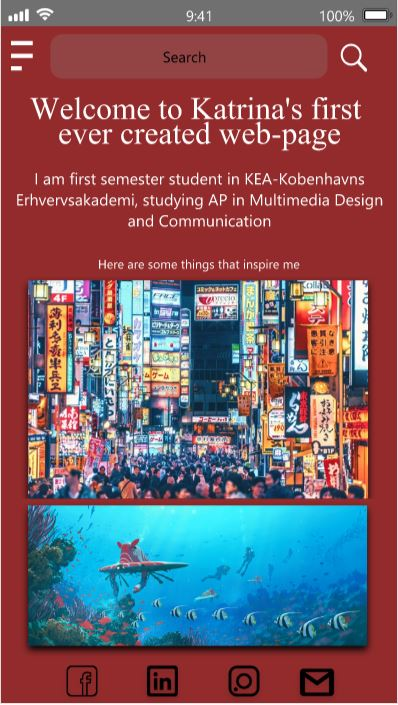

This was the first time working with Adobe XD. I love to create prototypes, it makes the process of coding a website so much more easier, because you already have a vision how the website should look like.
I learned how to use the UI kits, so the prototype looked very real.
Unfortunatelly sometimes it is imposible to code exactly the same as in prototype, because I do not have enough knowledge, but it always is a good motivation to learn someting new.
You can see in the screen shot, that I have been using a lot of UI kits for IOS.
Also the social media icons look less "all over the place" in the prototype than in the coded version, It was a huge struggle for me to make the icons work and stay in the place.
But now I know how to make the social media icons work and stay in the footer.
